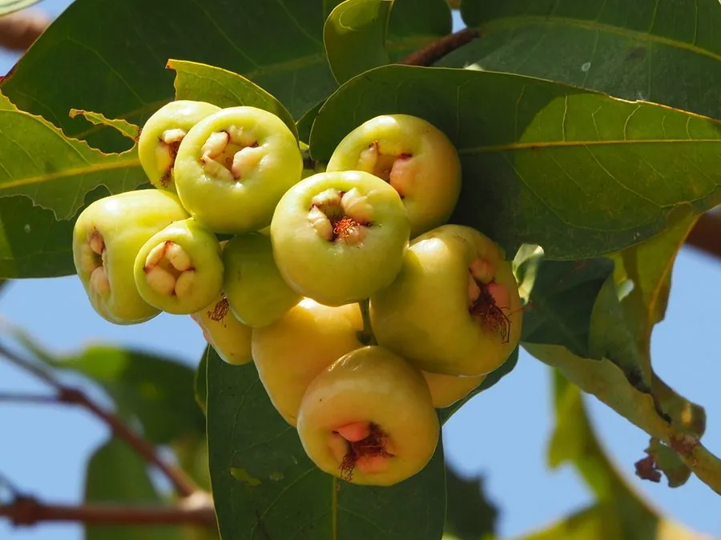

乔木 · 植物界
莲雾 Syzygium samarangense

原产东南亚的热带水果，果实钟形、成熟时粉红或红色，果肉海绵质、清甜多汁，是夏季消暑佳果。
- 分类
- 门被子植物门纲木兰纲目桃金娘目科桃金娘科属蒲桃属
- 栖息环境
- 海拔 500 米以下的热带地区，喜高温多湿
- 地理分布
- 原产马来半岛至印度尼西亚，中国台湾、广东、广西、福建等地栽培
- 保护级别
- 暂无评估；中国未列入国家重点保护野生植物名录
物种志
莲雾为常绿乔木，高可达 10 m，树皮灰褐色；叶片对生，椭圆形至长圆形，革质。花期 3–5 月，聚伞花序顶生，花小、白色，雄蕊多数；果实为浆果，钟形或圆锥形，顶端凹陷，成熟时淡红、粉红或深红色，果皮薄、果肉海绵质、清甜多汁，内含 1–2 粒种子。
莲雾原产马来半岛至印度尼西亚一带，中国台湾、广东、广西、福建、海南等地栽培，喜高温多湿、光照充足，适宜深厚肥沃、排水良好的土壤，不耐寒。夏季果熟，清甜多汁，是消暑佳果，可鲜食或制果汁、沙拉；台湾屏东是著名的莲雾产区，栽培品种有黑珍珠、黑钻石等；叶片与果实可入药。莲雾果实不耐贮运，采摘后需尽快食用或冷藏。
形态与习性
- 株高可达 10 m，树皮灰褐色
- 花期3–5 月，花小、白色
- 果期5–7 月，果实钟形
- 光照喜光，不耐长期荫蔽
- 水分喜湿润，怕积水
- 主要用途鲜食水果、果汁沙拉、庭院观赏
趣味知识
- 莲雾的果实呈钟形、顶端凹陷，成熟时粉红透亮，因此又叫“铃铛果”。
- 莲雾果肉海绵质、清甜多汁，是南方夏季的消暑佳果。
- 台湾屏东是著名的莲雾产区，培育出“黑珍珠”等优良品种。